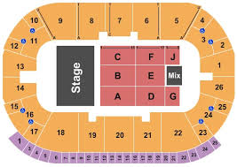

←
Paramount Fine Foods Centre
Contact
Accessible Seating
- Accessible seating [all seating indicated by W]: Accessible seating is shown on Ticketmaster
- Guests who need accessible seating, but did not purchase tickets in an accessible area, will be accommodated to the best of their ability

Ticket Information
- Guests are permitted to purchase 2 accessible seats for an event, one accesible and one companion
- If you require accessible seating, please inform the ticket seller at the time of purchase or choose the accessible seating option on Ticketmaster
Restrooms
- Located at Sections 3, 6, 7, 13, 14, 16, 20, 21, and 24 on the main concourse level
Accessible Parking
- 2m high parking garage
- Parking lots on the North and South sides of the Arena include designated parking spots where accessible permits are required for use
- Spots are filled on a first-come, first-serve basis
Accessible Entrance
- AB Arena Gate 1 provides direct access to the concourse from the parking lots on the same level (no additional stairs/steps)
- All public entrances all have button-activated door openers or sliding doors
Elevators
- Public elevators are located at B Arena Gate 2, inside Rinks 2, 3 and 4 (near A Rinks Entrance) and in the Sportsplex (near C Sportsplex Gate 2)
Gates
Additional Information
- An accessible-level concession counter is located at section 3 on the main concourse level
- The box office has an accessible counter located at B Arena Gate 1 (main entrance)
Map

{kind=link}
{kind=link}
{kind=link}
{kind=link}